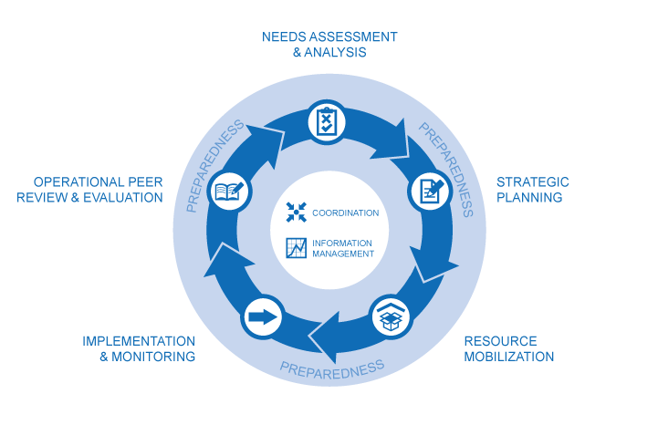

人道プログラムサイクル
人道プログラムサイクル（Humanitarian Programme Cycle: HPC）は、以下の５つの要素から成り立っています。

1. 支援ニーズの調査と分析
2. 戦略対応計画の策定
3. 資源の動員
4. 実施とモニタリング
5. 活動業務の見直しと評価
これら5つの各要素が、それぞれその前の要素をもとに構成され、また次の要素へつながるような、切れ目のない流れを形作っています。そして、このサイクルがうまく機能するかどうかは、いざという時のための備えや、被災国の中央および地方政府あるいは様々な人道支援アクターとの調整、情報管理などが効果的に行われているか否かにも左右されます。
１． 支援ニーズの調査と分析
個別の人道危機や緊急事態について、影響を受けた人々の支援ニーズを把握し、その優先順位を判断することで、効率的かつ一貫した人道支援活動が可能となります。特に、人道危機が長期化するにつれて、数多くのより詳細な情報が必要となります。クラスターあるいはセクターと呼ばれる専門分野毎の細分化された情報収集を行うとともに、こうしたニーズ分析を分野横断的に合同で行う等、調和の取れたアセスメントアプローチも必要となります。このようにして取りまとめられた成果が、人道ニーズ概況報告（Humanitarian Needs Overview: HNO）となります。このHNOは「マルチクラスター/セクターによる初動迅速アセスメント（Multi Cluster/Sector Initial Rapid Assessment: MIRA）」という分析枠組みに沿って構成されます。
２． 戦略対応計画の策定
人道ニーズ概況報告（HNO）をもとに、人道カントリーチーム（Humanitarian Country Teams: HCTs）は戦略対応計画（Strategic Response Plans：SRPs）を策定します。HNOで示されたニーズを満たすことがSRPが示す戦略目標となり、その国で活動する人道コミュニティ全体としてどのように目標を達成するのかを説明しています。また各クラスター毎の支援計画はこの戦略目標を達成するためにそのクラスターが果たす役割を規定するものとして、クラスター毎の活動目的や内容、さらには企図された成果等が詳述されます。このように、戦略対応計画は、人道調整官（HC）と人道カントリーチーム（HCT）のための管理ツールとも言えます。
３． 資源の動員
またSRPはドナー等にも共有されることから、資源動員の目的でも活用されます。特に、OCHAは人道危機に迅速に対応できるよう、2種類の運用基金を管理しています。国連中央緊急対応基金（Central Emergency Response Fund: CERF）等の運用基金については、「資金手当てのためのツール」のページをご覧下さい。
OCHAが運営する資金追跡サービス（Financial Tracking Service：FTS）は、戦略対応計画や緊急アピールに関する資金状況のモニタリングを行っています。FTSは人道危機に対応する際の資金提供という観点から、透明性や注目度を高めるためのオープンデータプラットフォームで、政府ドナー、国連機関、NGOsなどと協力の上、資金拠出に関するデータを収集、精査、分析した上で、継続的に情報更新を行っています。FTSは、OCHAジュネーブ本部プログラムサポート部（Programme Support Branch：PSB）に置かれています（連絡先：fts@un.org）。
４． 実施とモニタリング
支援活動モニタリングは、被災者に対する人道支援の進捗状況を追跡・調査する継続的なプロセスで、戦略対応計画（SRPs）で定められた目標や目的が実際に達成されたかを判断するものです。その際、被災者の多様性や支援に対する要望を考慮し、支援活動に投入された資源とその成果を追跡し、更にはクラスター別の活動結果をまとめ、SRPの戦略的目標の達成度を判定します。即ち、人道コミュニティがSRPで確約したことをきちんと実施しているかどうかを判断することになるため、特に説明責任という観点から人道プログラムサイクルの重要なステップの１つとされています。人道アクターは合意されたスケジュールに従って、情報の収集・分析を行い、こうして得られたデータは、定期モニタリングレポート（PMR）としてまとめられて公開されます。あわせて、「人道ダッシュボード（Humanitarian Dashboard）」も作成され、支援のニーズやギャップ、あるいは支援活動の進捗状況等を分かりやすく伝えます。
５． 活動業務の見直しと評価
人道支援活動の軌道修正を図ったり、迅速な是正措置が必要な分野を特定したりするため、組織横断型の業務見直しと評価作業も行われます。オペレーショナル・ピアレビュー(Operational Peer Review: OPR)と呼ばれ、特に現地リーダーシップのあり方、人道プログラムサイクルの実施、調整活動、被災者に対する説明責任を果すためのメカニズムといった観点を中心に、人道調整官(HCs)や人道カントリーチームにとっての改善措置が必要かどうかを判断するため等に用いられます。OPRは人道調整官/人道カントリーチーム、機関間常設委員会（Inter-Agency Standing Committee: IASC）がその開始を決定します。特に、レベル3（L3）と呼ばれる最高レベルの緊急事態では、OPRは人道プログラムサイクル上必須となり、レベル3を宣言後90日以内に実施しなければなりません。このようにOPRは主にIASC関係者用内部向けのものですが、レポートの要約はhumanitarianresponse.infoで公開される予定となっています。
「人道プログラムサイクル」の詳細はこちら（英語）>>
最新の人道支援プログラムサイクル文書（英語）>>